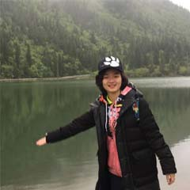

创始人
- 李国东
- 团队负责人
- 2012级物联网工程专业
- 研究方向：无线传感器网络、大数据
- 在校经历：曾获计算机设计大赛全国三等奖； 全国Java程序设计大赛西南赛区三等奖； 2014年Google大学生创新训练项目； 校优秀学生奖学金二等奖四次，三等奖一次；校三好学生一次；中国红十字协会急救员。
- 毕业去向：团博百众科技有限公司
- 邮箱：liguodongiot@foxmail.com
负责人
-
第一届负责人
李国东 -
第二届负责人
陈庙红 
吴豪杰 
羊荣毅 -
第三届候选负责人

王萍 
周成 宋骐飞 
易小风
优秀毕业生
- 赵闽江
- 2013级物联网工程专业
- 研究方向：Android
- 在校经历： 大学四年匆匆忙忙，多留心身边的人事，多学习点补充下自己。现在认为很多没用的以后都很有用，多学一点，找点自己喜欢的继续喜欢下去。大学生活愉快，好好享受
- 毕业去向：恩业科技有限公司
- 邮箱：retawdeen_z@qq.com
- 张龙
- 2013级物联网工程专业
- 研究方向：Android
- 毕业去向：华勤通讯技术有限公司
- 邮箱：473199550@qq.com
- 尤蒙蒙
- 2013级物联网工程专业
- 研究方向：嵌入式软件
- 项目经验： 基于zigbee协议栈开发的通用传感器系统、基于超高频RFID的批量识别系统、基于STM32的语音识别控制系统
- 获奖情况：全国物联网设计大赛二等奖 、校级盛特杯特等奖
- 毕业去向：深圳迈腾电子有限公司
- 邮箱：lematin_cd@163.com
- 吴鹏
- 2013级计算机科学与技术
- 研究方向：游戏开发
- 邮箱：banming729@163.com
- 张西
- 2013级物联网工程专业
- 研究方向：Web后端
- 毕业去向：TCL
- 邮箱：emcc_zx@qq.com
- 张西
- 2013级物联网工程专业
- 研究方向：Web后端
- 毕业去向：TCL
- 邮箱：emcc_zx@qq.com
- 李国东
- 2012级物联网工程专业
- 研究方向：无线传感器网络、大数据
- 在校经历：曾获计算机设计大赛全国三等奖； 全国Java程序设计大赛西南赛区三等奖； 2014年Google大学生创新训练项目； 校优秀学生奖学金二等奖四次，三等奖一次；校三好学生一次；中国红十字协会急救员。
- 毕业去向：团博百众科技有限公司
- 邮箱：liguodongiot@foxmail.com
- 朱婷婷
- 2012级物联网工程专业
- 研究方向：NLP（自然语言处理）
- 在校经历：多次获得优秀学生一等奖学金，优秀三好学生，优秀团员；获得第一届“灵动”物联网创意想法大赛三等奖，第二届“灵动”物联网创意想法大赛特等奖，并成功入围TI举办的物联网创新应用大赛。获得2013年度西南石油大学学生志愿者社会实践活动优秀个人，2013年度校级优秀志愿者等荣誉称号。
- 毕业去向：保研至西南石油大学CINS复杂网络实验室继续深造
- 邮箱：582353466@qq.com

- 杜凤翎
- 2012级物联网工程专业
- 在校经历：省高校乒乓球邀请赛女子团体操第七名，曾获院女子篮球赛团体第一名， 校篮球赛团体第八名，校级五四大合唱二等奖、校级篮球赛第七名、校级乒乓球第六名，优秀学生三等奖学金。
- 毕业去向：自主创业
- 邮箱：199753020@qq.com
- 权赵衡
- 2012级物联网工程专业
- 研究方向：大数据和数据挖掘
- 在校经历：参加了校青志协、校青鸟话剧社、校农民之子，计科院组织部等部门和协会， 多次获得专业二、三等奖学金。 参与的项目有 “基于ZigBee和以太网的无线控制系统”、 “基于ZigBee的智能家居Web端开发”、 "基于ZigBee的智能家居移动端开发"。
- 毕业去向：考研到西南石油大学数据挖掘实验室继续深造
- 邮箱：13689047955@163.com
- 罗俊
- 2012级物联网工程专业
- 在校经历： 青鸟话剧社会长
- 毕业去向：联创易捷
- 邮箱：907394893@qq.com
大事件
- 2016.10：翼灵物联工作室网站正式上线
- 2016.09：翼灵物联工作室成立团队第四方向：Web前端
- 2016.08： 工作室成员荣获全国大学生计算机设计大赛全国一等奖
- 2016.07：工作室成员荣获TI杯全国物联网设计竞赛华中及西南赛区一等奖
- 2016.06：工作室成员荣获全国高校物联网应用创新大赛西南赛区一等奖
- 2015.11：团队规范发展方向，形成嵌入式开发、移动端开发、WEB后端开发三大方向。
- 2015.10：翼灵物联工作室由留美教师梁宗文博士担任指导教师。
- 2015.08：工作室成员荣获TI杯全国物联网设计竞赛华中及西南赛区特等奖；
工作室成员荣获TI杯全国物联网设计竞赛全国二等奖。 - 2014.08：工作室成员荣获第一项竞赛获奖，荣获TI杯全国物联网设计赛华中及西南赛区二等奖。
- 2013.11：物联网工程专业12级李国冬同学创建翼灵物联工作室，周永老师担任指导教师。
团队介绍
翼灵工作室成立于2013年，隶属于物联网工程教研室，是一个集学生创新与项目实战与一体的科学性实验室。团队由留美教师梁宗文为指导老师。目前团队以探索物联网前沿科技为主导，形成嵌入式开发、移动端开发、web前端开发、服务器后端开发四大完整培养模型，以科研竞赛与外包项目实战为团队主导工作。团队各项成果丰硕，2年内承包外包项目6项，科研竞赛获省级以上奖项11项、国家级奖项7项。